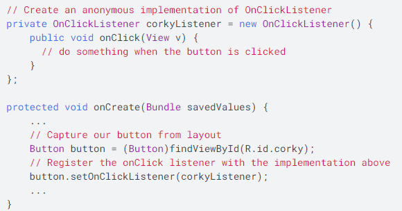
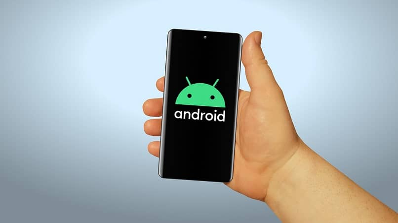
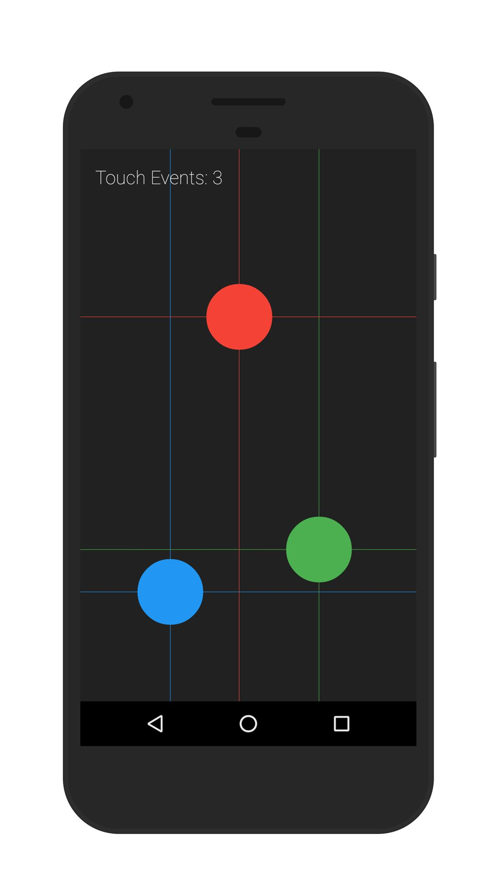

Título: TouchScreen
Eventos de entrada
Existe más de una forma de interceptar los eventos con los desde una interacción del usuario con tu aplicación. El enfoque consiste en capturar eventos desde objeto de vista específico con el que el usuario interactúa.
La clase View contiene una colección de interfaces anidadas con devoluciones de llamada que puedes definir más fácilmente. Estas interfaces, llamadas objetos de escucha de eventos, permiten capturar la interacción del usuario con tu IU.
Gestores de Eventos
Un objeto de escucha de eventos es una interfaz de la clase View que contiene un solo método de devolución de llamada. El framework de Android llamará a estos métodos cuando la vista con la que se haya registrado el objeto de escucha se active por la interacción del usuario con el elemento de la IU.
Métodos de devolución de llamadas:
Definir métodos de devolución de llamada
1. Implementar la interfaz anidada en la actividad o definirla como una clase anónima.
2. Pasar una instancia de la implementación al método View.set...Listener() respectivo (p. ej., llama a setOnClickListener() y pásale tu implementación del objeto OnClickListener).

Controladores de eventos
Si estás creando un componente personalizado desde un elemento View, podrás definir varios métodos de devolución de llamada utilizados como controladores de eventos predeterminados. Las devoluciones de llamada que se utilizan comúnmente para controlar eventos son:
• onKeyDown(int, KeyEvent): Se llama cuando se produce un evento de tecla nuevo.
• onKeyUp(int, KeyEvent): Se llama cuando se produce un evento de activación de tecla.
• onTrackballEvent(MotionEvent): Se llama cuando se produce un evento de movimiento de la bola de seguimiento.
• onTouchEvent(MotionEvent): Se llama cuando se produce un evento de movimiento de la pantalla táctil.
• onFocusChanged(boolean, int, Rect): Se llama cuando la vista gana o pierde el foco.
Modo táctil
Cuando un usuario navega en una interfaz de usuario con teclas direccionales o una bola de seguimiento, es necesario enfocar los elementos que se pueden accionar (como los botones) para que el usuario pueda ver lo que aceptará una entrada.
El estado del modo táctil se mantiene en todo el sistema (todas las ventanas y actividades). A fin de consultar el estado actual, puedes llamar a isInTouchMode() para comprobar si el dispositivo está en el modo táctil.

Cómo controlar el foco
El framework controlará el movimiento del foco de rutina en respuesta a las entradas del usuario. Esto incluye cambiar el foco a medida que se oculten o quiten las vistas, o a medida que haya nuevas vistas disponibles.

El movimiento del foco se basa en un algoritmo que encuentra el vecino más cercano en una dirección determinada.
Cuando el algoritmo no coincide con el comportamiento previsto del desarrollador, se debe proporcionar anulaciones explícitas con los siguientes atributos XML en el archivo de diseño: nextFocusDown, nextFocusLeft, nextFocusRight y nextFocusUp.

Para solicitar que se enfoque un elemento View en particular, llama a requestFocus(). Para detectar eventos de foco (ser notificado cuando un elemento View recibe o pierde el foco), utiliza onFocusChange(), como se explica en la sección Objetos de escucha de eventos.
Motionevent
Objeto utilizado para informar eventos de movimiento (mouse, lápiz, dedo, trackball). Los eventos de movimiento pueden contener movimientos absolutos o relativos y otros datos, según el tipo de dispositivo.
Algunas constantes típicas en MotionEvent son:
• MotionEvent.ACTION_DOWN: Ocurre cuando se apoyó un dedo en la pantalla.
• MotionEvent.ACTION_MOVE: Ocurre cuando se movió un dedo mientras estaba apoyado en la pantalla.
• MotionEvent.ACTION_UP: Ocurre cuando se levantó un dedo de la pantalla.
• MotionEvent.ACTION_POINTER_DOWN: Ocurre cuando por cada dedo adicional.
• MotionEvent.ACTION_POINTER_UP: Ocurre cuando algún dedo se levanta menos el ultimo.

Multi Touch
La clase Multitouch administra y proporciona información sobre la compatibilidad del entorno actual para la gestión del contacto de los dispositivos de entrada del usuario, incluidos los que tienen dos o más puntos de contacto.
La API para controlar la interacción del usuario con estos eventos de gestos incluye las siguientes clases:
• flash.events.TouchEvent: permite manejar eventos en dispositivos que detectan el contacto del usuario con el dispositivo.
• flash.events.GestureEvent: permite manejar eventos multitáctiles en dispositivos que detectan un contacto complejo del usuario con el dispositivo
• flash.events.GesturePhase: es una clase de enumeración de valores constantes para usar con las clases GestureEvent, PressAndTapGestureEvent y TransformGestureEvent
• flash.events.TransformGestureEvent: permite manejar eventos de entrada de movimiento complejos
• flash.events.PressAndTapGestureEvent: permite manejar el gesto de presionar y tocar en dispositivos táctiles.
